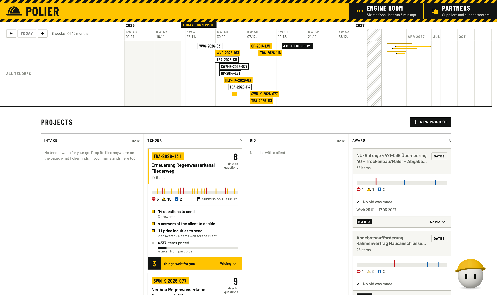
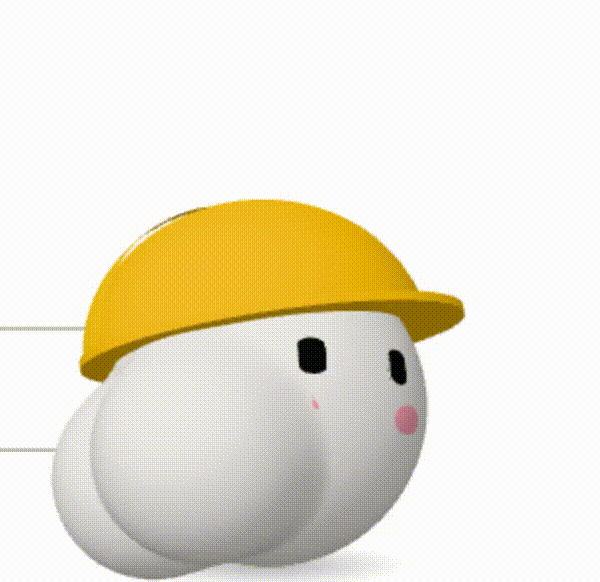
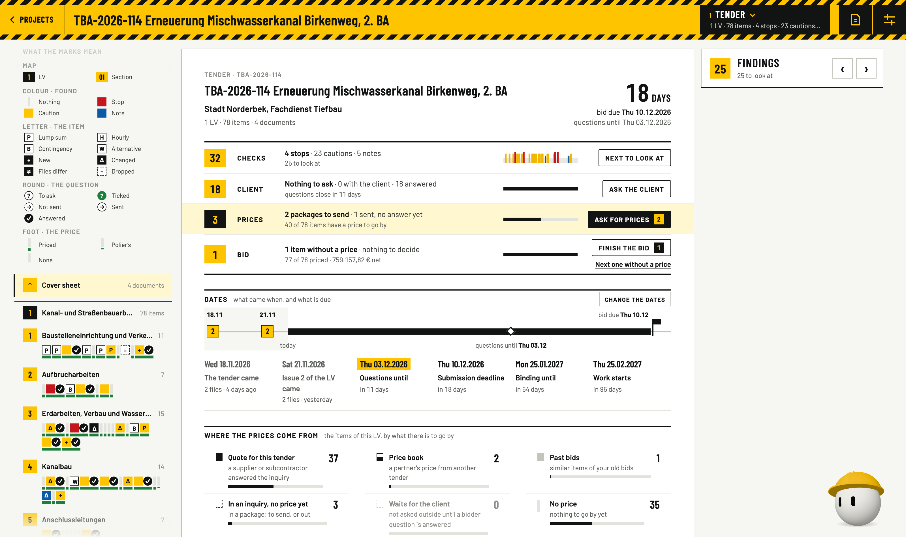
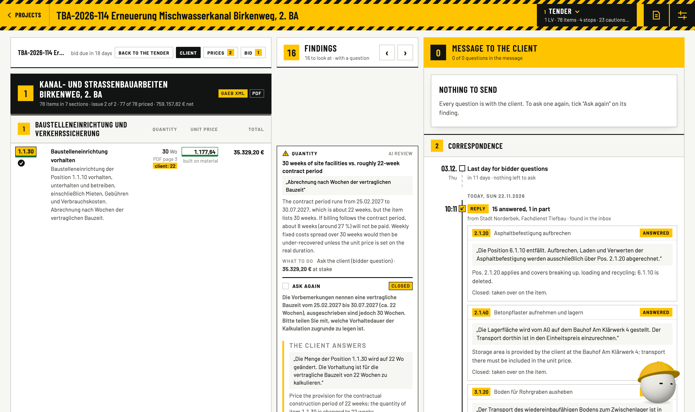
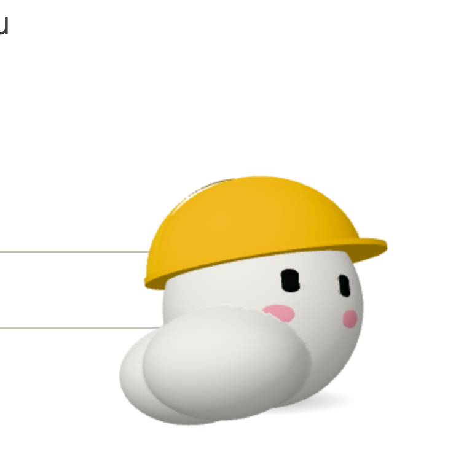

A German bill of quantities (LV) has thousands of items, several cost groups and dependencies between trades. Typos, calculation errors, missing items and hidden change-order potential cost real money, because under VOB/B the unit price binds and the estimator has two weeks and

You press two buttons. Polier does the rest.
Polier sees it before you do and has already parsed it: errors, contradictions, open points.
From past projects and mails: their prices, products, how often they answer and how fast.
One click: we bid on this one.
Questions to the client. Price requests to several partners. Temporary prices on every item without an open question.
Client answers and quotes are caught in the mailbox and filled in on the items.
Quotes from several partners are compared, and the best one replaces the temporary price.
You check what changed and say yes.
By mail, by the agent.
Talking to the agent? Obviously. We're not even mentioning it.


IMAP / SMTP (Stalwart in the demo)
GAEB XML · GAEB 90 · PDF · Excel
It starts on its own when mail arrives and waits for your green light.
Arithmetic, units, quantities, missing items
Opus 5.5 / Haiku 5.5 per task, with a cache and a cost log
Questions · price mails · bid (GAEB X84)
Partners, prices and mails across all tenders
Python · FastAPI · SQLAlchemy
React · TypeScript · Vite · three.js
Postgres
Docker · Render · Neon
